Ground-floor divided villa3 bedrooms
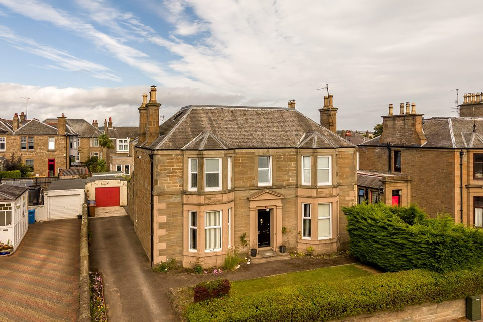
£269,000Offers over
79a Clepington Road, Dundee
Listed 2 October 2026 · Verdala
Advertised as three bedrooms; additional sitting room offers a flexible layout.
Daily property watch
Homes for sale · 2–3 bedrooms · Up to £270,000
Updated 3 October 2026 · 7 new · 70 in the archive

Listed 2 October 2026 · Verdala
Advertised as three bedrooms; additional sitting room offers a flexible layout.
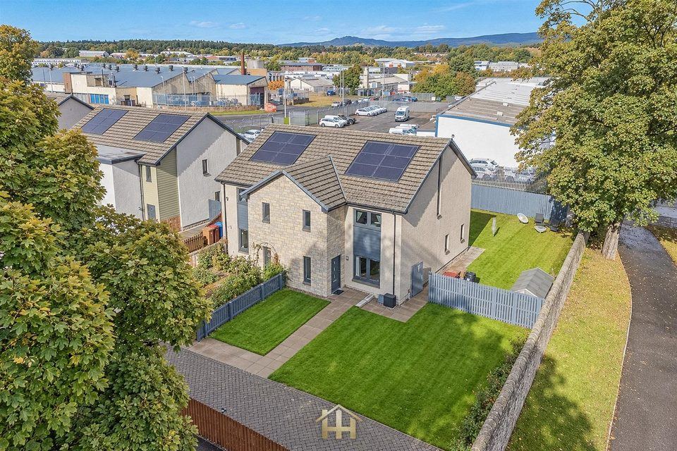
Listed 2 October 2026 · Harmony Homes
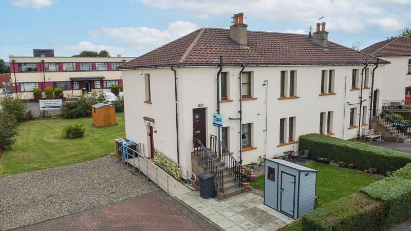
Listed 2 October 2026 · Yopa
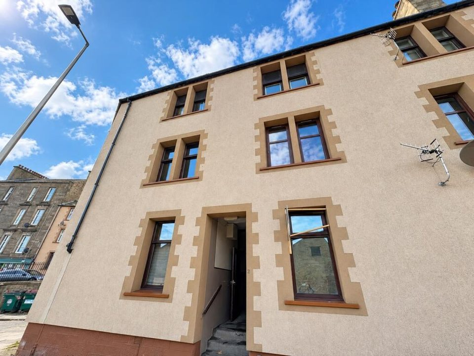
Listed 2 October 2026 · New Town Property
Current HMO licence advertised.
Original agent page unavailable; portal listing linked.
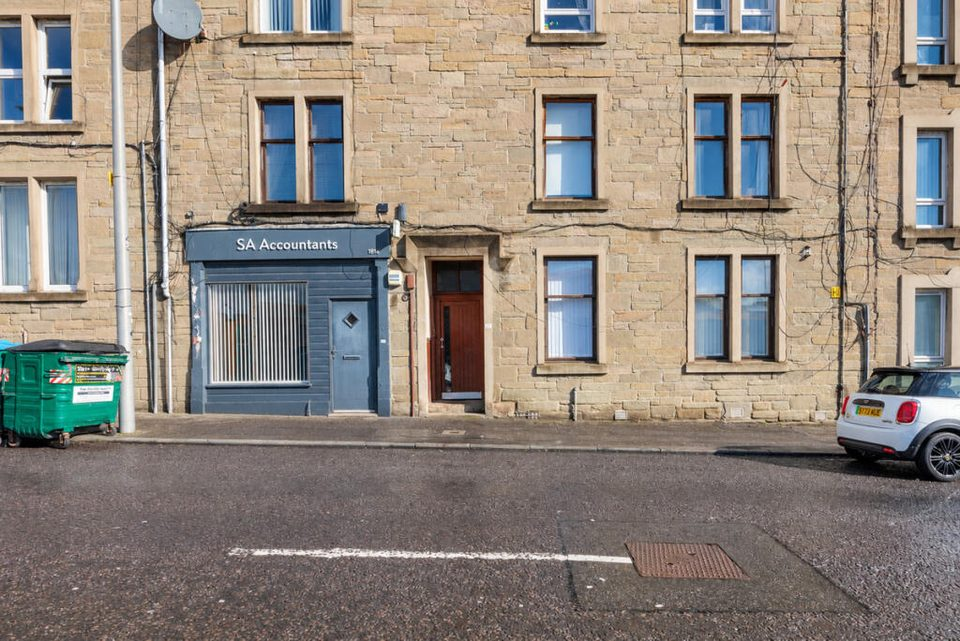
Listed 2 October 2026 · McIntyre Properties
Original agent page unavailable; portal listing linked.
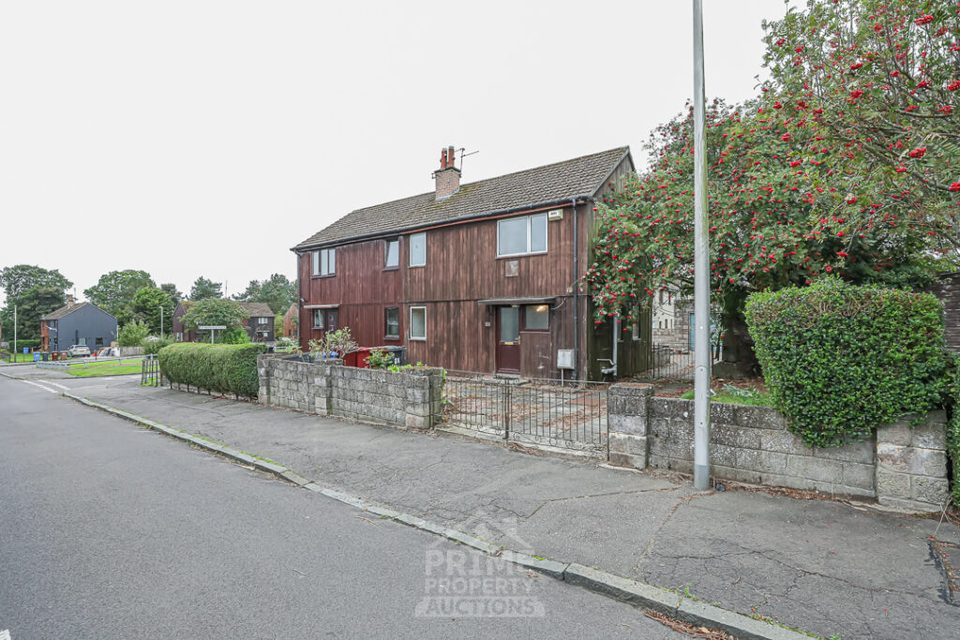
Listed 2 October 2026 · Prime Property Auctions
Refurbishment opportunity. Auction advertised for 8 October at 10:30am. Buyer's fee: 3%, subject to a minimum £5,000 plus VAT (£6,000 including VAT at the minimum); deposit 10%, minimum £5,000. Terms must be checked for seller variations.
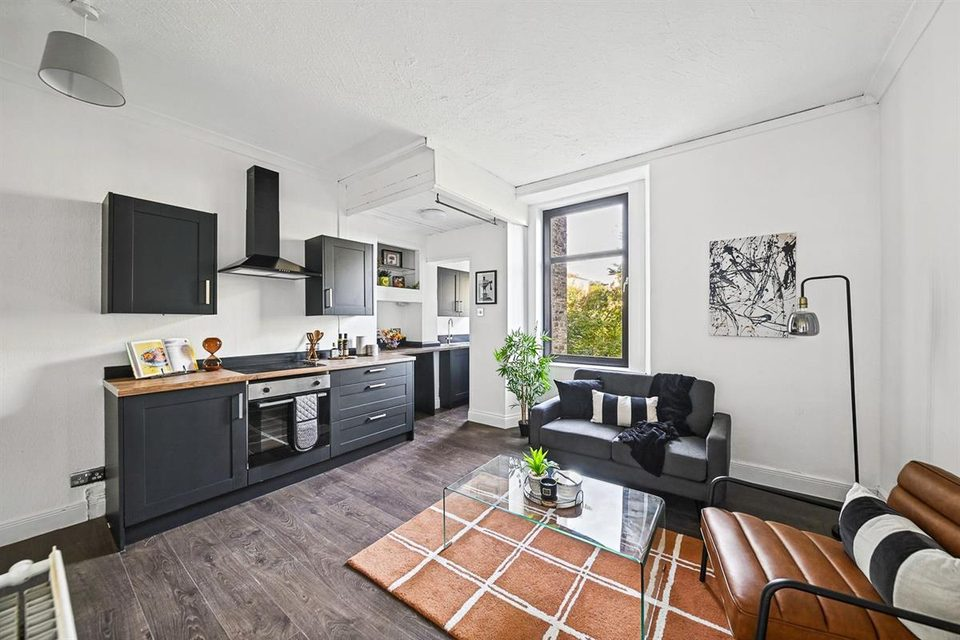
Listed 2 October 2026 · Keystone Property
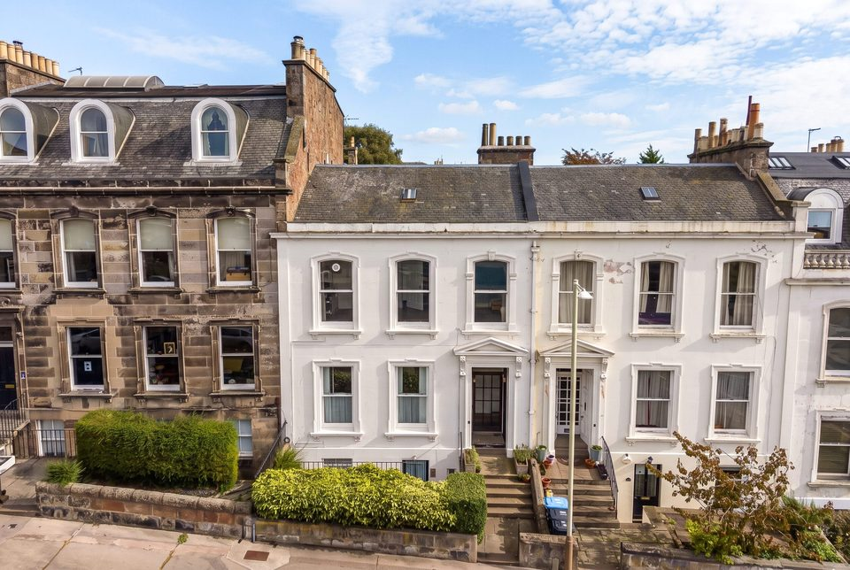
Listed 1 October 2026 · Verdala
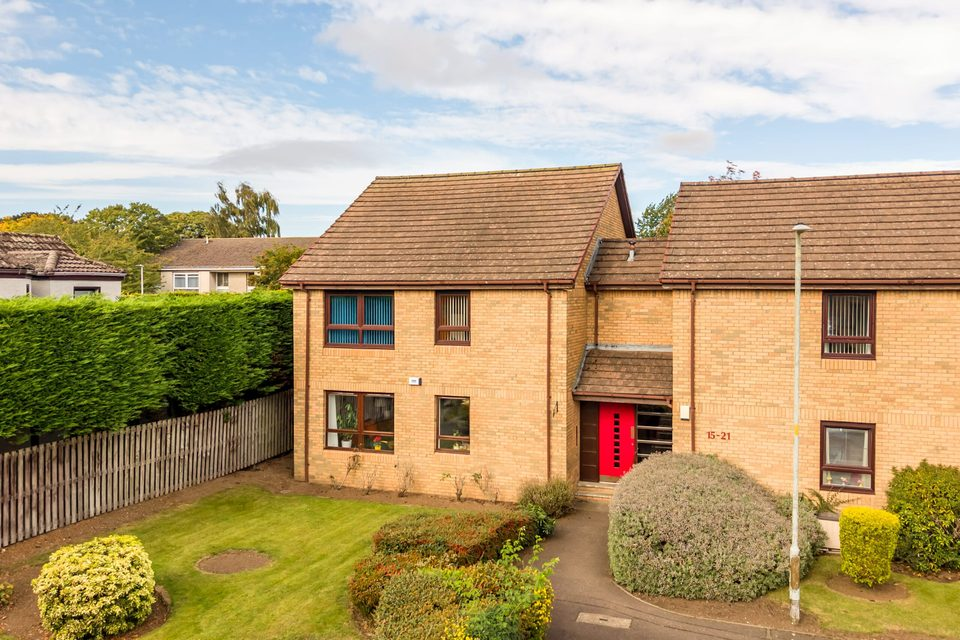
Listed 1 October 2026 · Verdala
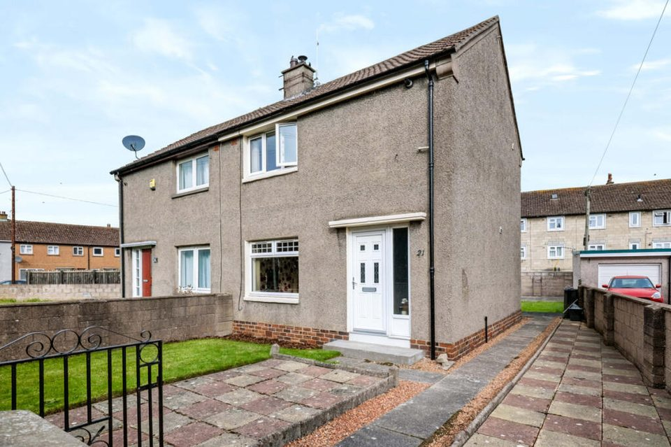
Listed 1 October 2026 · McIntyre Properties
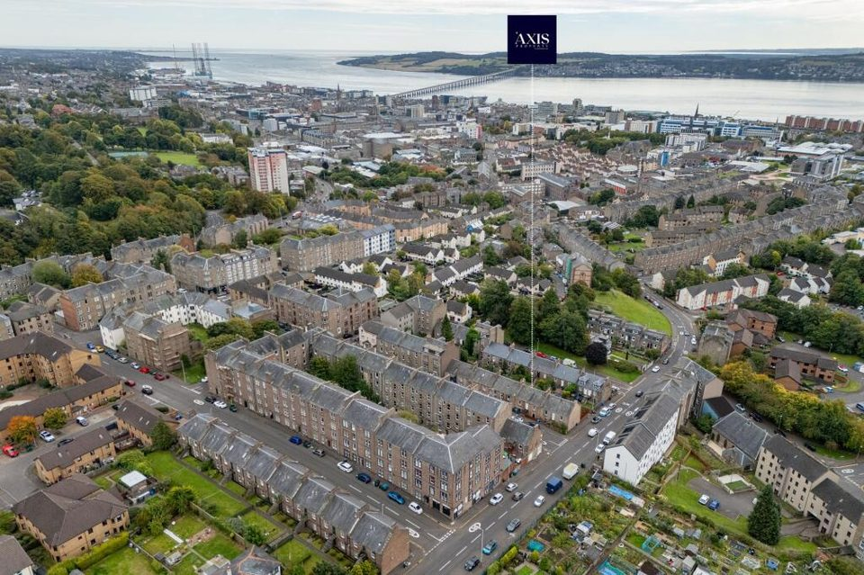
Listed 1 October 2026 · Axis Property
Original agent page unavailable; portal listing linked.
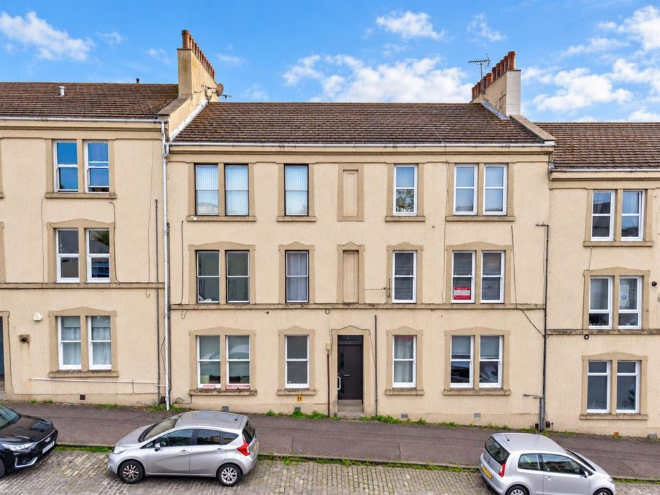
Listed 1 October 2026 · Rosie Fraser Real Estate
First seen 2 October 2026; listing date unavailable · Gilson Gray
First discovered 2 October 2026; original listing date unavailable.
First seen 2 October 2026; listing date unavailable · Gilson Gray
First discovered 2 October 2026; original listing date unavailable.
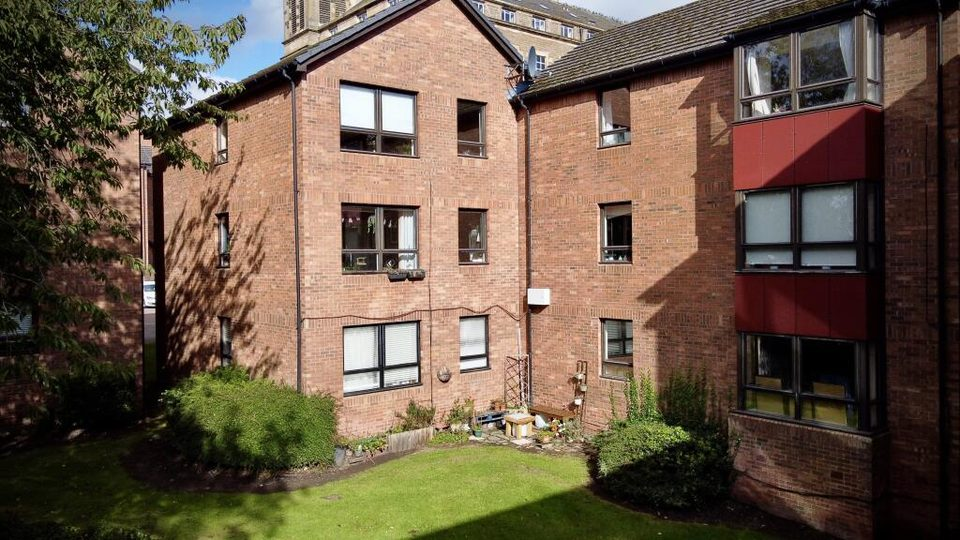
Listed 30 September 2026 · Dymock Properties
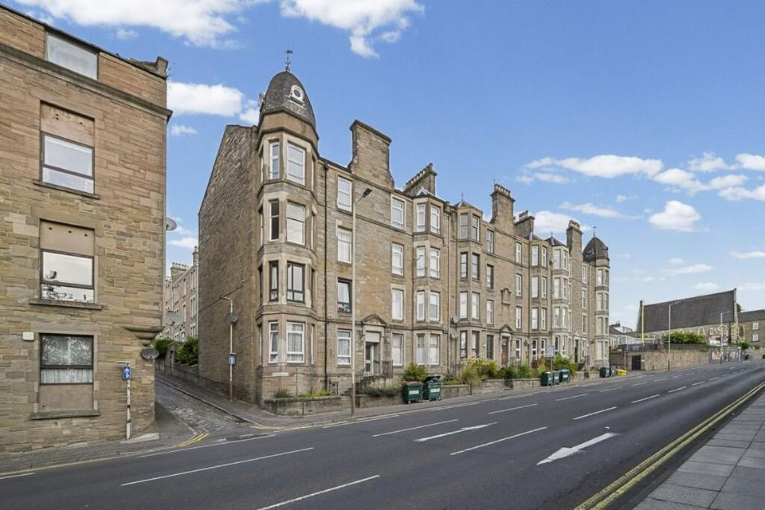
Listed 30 September 2026 · Keystone Property
Original agent page unavailable; portal listing linked.
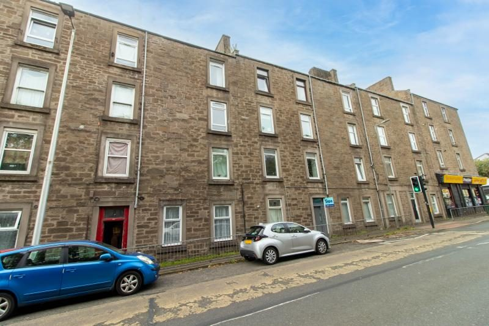
Listed 30 September 2026 · Yopa
First seen 1 October 2026; listing date unavailable · Gilson Gray
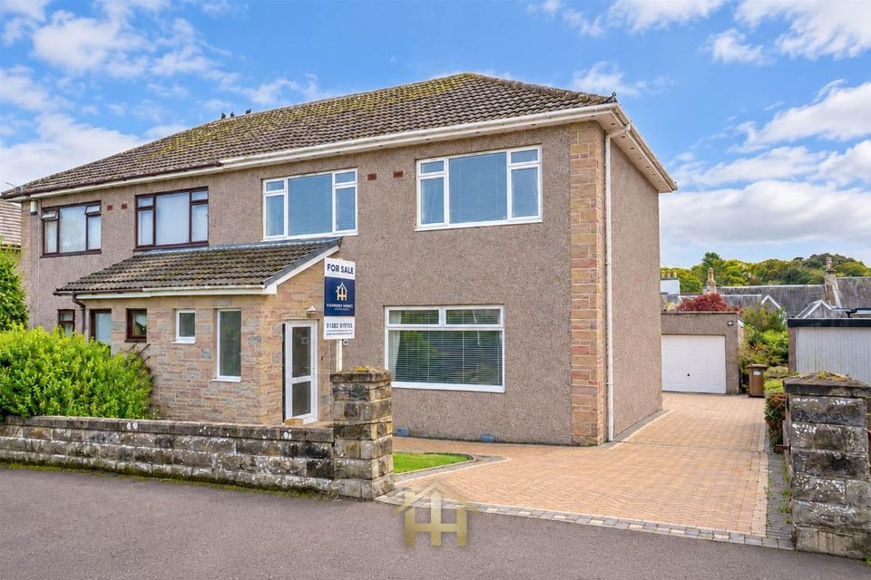
Listed 29 September 2026 · Harmony Homes
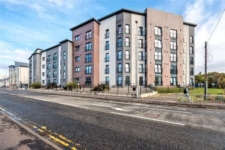
Listed 29 September 2026 · Your Move